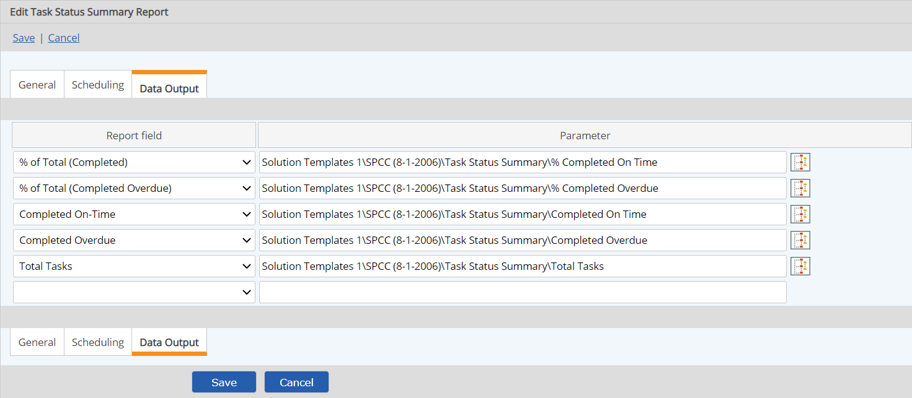

When a report has an automatic execution schedule, the option is available to save selected report data to parameters. This option is available for the following types of reports:
The Data Output tab allows for specifying any number of field to Parameter combinations. The same data source may be mapped to multiple Parameters, but a Parameter may be used just once.
Each time the report runs, the final summary values for each mapped field in the report is saved to the data point table for the associated parameter.
The set of fields available for data output for each report type are:
|
Report Type |
Mappable fields |
|---|---|
|
Task Status Summary Report |
Total Tasks Completed % of Total (Completed) Completed On-Time % of Total (Completed On Time) Completed Overdue % of Total (Completed Overdue) Pending % of Total (Pending) Overdue % of Total (Overdue) Dismissed % of Total (Dismissed) |
|
Task Closing Time Summary Report |
Total Tasks Avg Time to Completion (Days) |
|
Event Instance Count Summary Report |
Total (relative to report begin/end dates) % of Total (relative to report begin/end dates) |
|
Non-Numeric Data Status Summary Report |
Yes Values % of Total (Yes) Yes With Comments Values % of Total (Yes With Comments) Not Determined Values % of Total (Not Determined) |
|
Workflow Report |
Any final aggregate value for any numeric field included in the report. Field must not be used for grouping. Also, COUNT: An aggregate value which does not apply to any single field. |
To set up report data output to parameters:
Create the parameters to receive the report values.
From the Report Field list, select the field whose report output summary values you want to save.
For a Workflow Report, you must first edit the desired fields on the Workflow Field Selection tab and select the aggregate value you want to output. The COUNT aggregation, which is not dependent on specific fields, may also be selected. See also: Workflow Report.
From the selection window, browse to find the parameter to map the report field to. Click Select.
Set up the rest of the Report Field-Parameter pairs as desired. A report field may be mapped to more than one parameter, but a parameter may only be used once.
When you have set up all the desired fields for output. Click Save.
